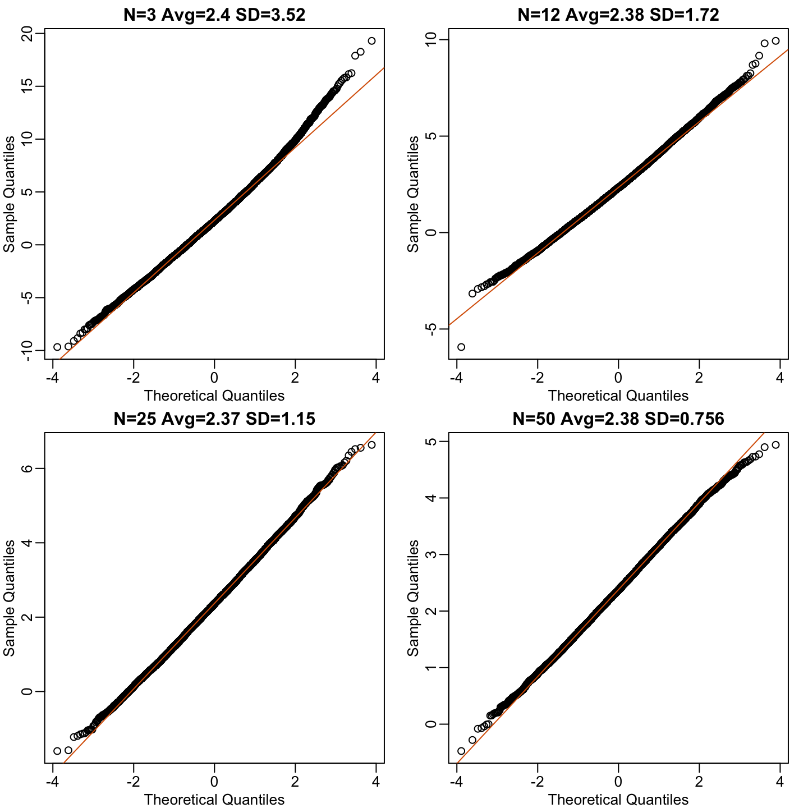
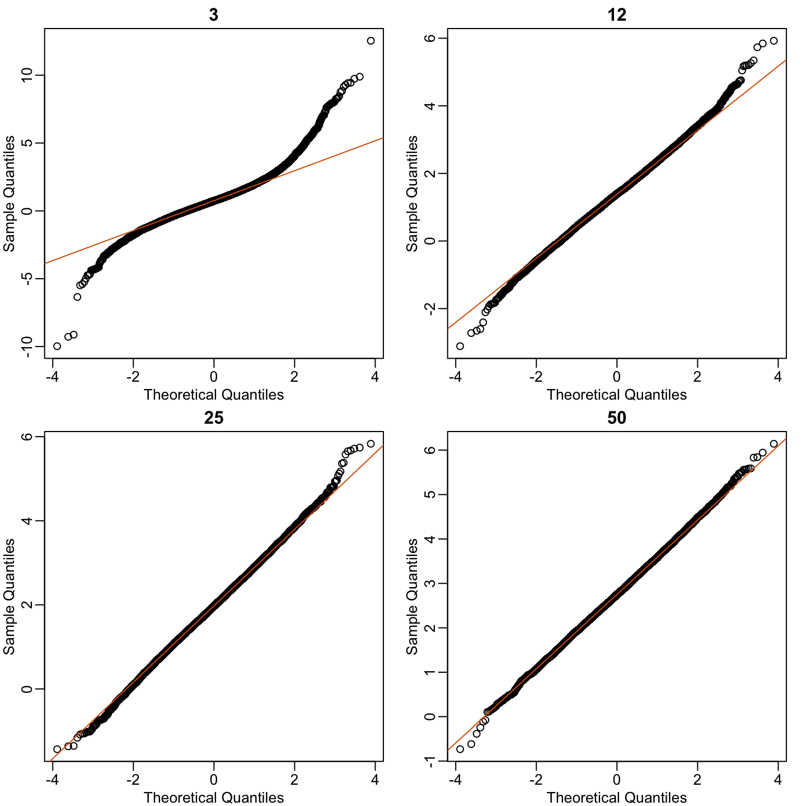

dat <- read.csv("mice_pheno.csv") #file was previously downloaded
head(dat) Sex Diet Bodyweight
1 F hf 31.94
2 F hf 32.48
3 F hf 22.82
4 F hf 19.92
5 F hf 32.22
6 F hf 27.50Let’s use our data to see how well the central limit theorem approximates sample averages from our data. We will leverage our entire population dataset to compare the results we obtain by actually sampling from the distribution to what the CLT predicts.
dat <- read.csv("mice_pheno.csv") #file was previously downloaded
head(dat) Sex Diet Bodyweight
1 F hf 31.94
2 F hf 32.48
3 F hf 22.82
4 F hf 19.92
5 F hf 32.22
6 F hf 27.50Start by selecting only female mice since males and females have different weights. We will select three mice from each population.
library(dplyr)
controlPopulation <- filter(dat,Sex == "F" & Diet == "chow") %>%
select(Bodyweight) %>% unlist
hfPopulation <- filter(dat,Sex == "F" & Diet == "hf") %>%
select(Bodyweight) %>% unlistWe can compute the population parameters of interest using the mean function.
mu_hf <- mean(hfPopulation)
mu_control <- mean(controlPopulation)
print(mu_hf - mu_control)[1] 2.375517We can compute the population standard deviations of, say, a vector \(x\) as well. However, we do not use the R function sd because this function actually does not compute the population standard deviation \(\sigma_x\). Instead, sd assumes the main argument is a random sample, say \(X\), and provides an estimate of \(\sigma_x\), defined by \(s_X\) above. As shown in the equations above the actual final answer differs because one divides by the sample size and the other by the sample size minus one. We can see that with R code:
x <- controlPopulation
N <- length(x)
populationvar <- mean((x-mean(x))^2)
identical(var(x), populationvar)[1] FALSEidentical(var(x)*(N-1)/N, populationvar)[1] FALSESo to be mathematically correct, we do not use sd or var. Instead, we use the popvar and popsd function in rafalib:
library(rafalib)
sd_hf <- popsd(hfPopulation)
sd_control <- popsd(controlPopulation)Remember that in practice we do not get to compute these population parameters. These are values we never see. In general, we want to estimate them from samples.
N <- 12
hf <- sample(hfPopulation, 12)
control <- sample(controlPopulation, 12)As we described, the CLT tells us that for large \(N\), each of these is approximately normal with average population mean and standard error population variance divided by \(N\). We mentioned that a rule of thumb is that \(N\) should be 30 or more. However, that is just a rule of thumb since the preciseness of the approximation depends on the population distribution. Here we can actually check the approximation and we do that for various values of \(N\).
Now we use sapply and replicate instead of for loops, which makes for cleaner code (we do not have to pre-allocate a vector, R takes care of this for us):
Ns <- c(3,12,25,50)
B <- 10000 #number of simulations
res <- sapply(Ns,function(n) {
replicate(B,mean(sample(hfPopulation,n))-mean(sample(controlPopulation,n)))
})Now we can use qq-plots to see how well CLT approximations works for these. If in fact the normal distribution is a good approximation, the points should fall on a straight line when compared to normal quantiles. The more it deviates, the worse the approximation. In the title, we also show the average and SD of the observed distribution, which demonstrates how the SD decreases with \(\sqrt{N}\) as predicted.
mypar(2,2)
for (i in seq(along=Ns)) {
titleavg <- signif(mean(res[,i]),3)
titlesd <- signif(popsd(res[,i]),3)
title <- paste0("N=",Ns[i]," Avg=",titleavg," SD=",titlesd)
qqnorm(res[,i],main=title)
qqline(res[,i],col=2)
}
Here we see a pretty good fit even for 3. Why is this? Because the population itself is relatively close to normally distributed, the averages are close to normal as well (the sum of normals is also a normal). In practice, we actually calculate a ratio: we divide by the estimated standard deviation. Here is where the sample size starts to matter more.
Ns <- c(3,12,25,50)
B <- 10000 #number of simulations
##function to compute a t-stat
computetstat <- function(n) {
y <- sample(hfPopulation,n)
x <- sample(controlPopulation,n)
(mean(y)-mean(x))/sqrt(var(y)/n+var(x)/n)
}
res <- sapply(Ns,function(n) {
replicate(B,computetstat(n))
})
mypar(2,2)
for (i in seq(along=Ns)) {
qqnorm(res[,i],main=Ns[i])
qqline(res[,i],col=2)
}
So we see that for \(N=3\), the CLT does not provide a usable approximation. For \(N=12\), there is a slight deviation at the higher values, although the approximation appears useful. For 25 and 50, the approximation is spot on.
This simulation only proves that \(N=12\) is large enough in this case, not in general. As mentioned above, we will not be able to perform this simulation in most situations. We only use the simulation to illustrate the concepts behind the CLT and its limitations. In future sections, we will describe the approaches we actually use in practice.